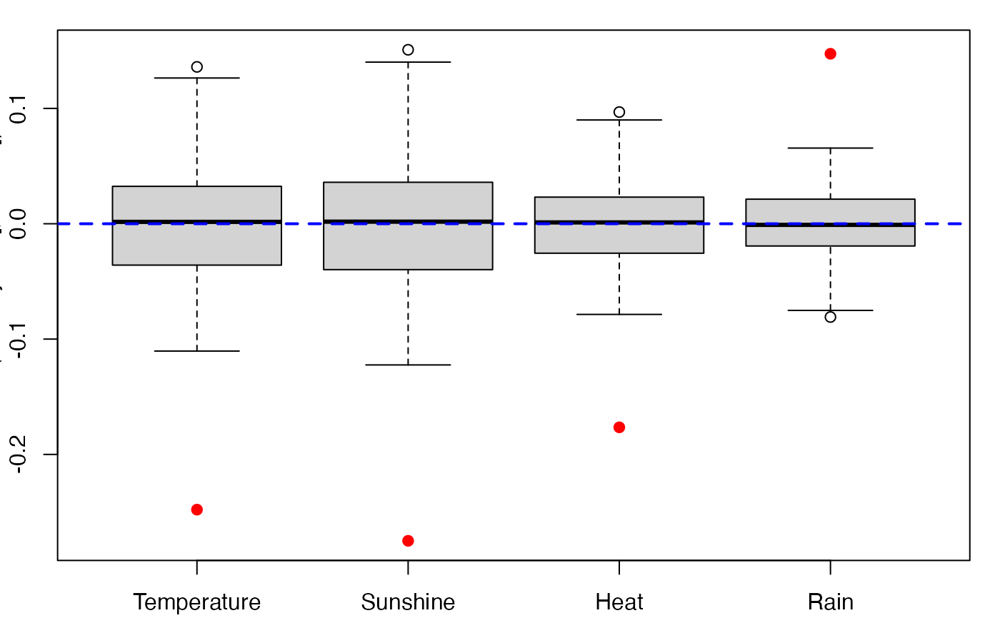
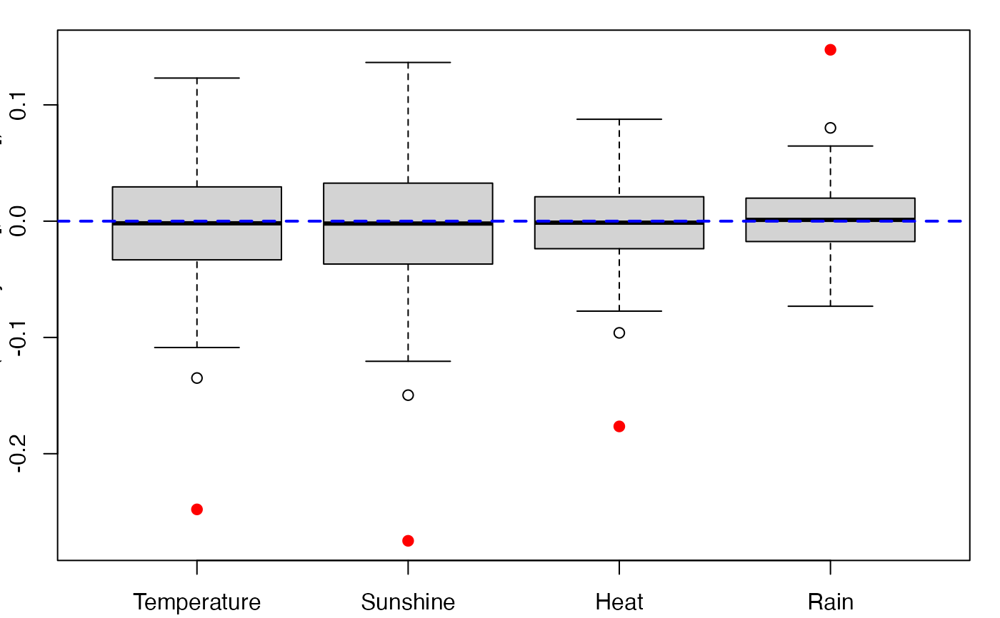

Provides a wrapper for the bootstrap function boot from the
boot R package.
Implements non-parametric bootstraps for PLS
Generalized Linear Regression models by either (Y,X) or (Y,T) resampling.
bootplsglm( object, typeboot = "fmodel_np", R = 250, statistic = coefs.plsRglmnp, sim = "ordinary", stype = "i", stabvalue = 1e+06, verbose = TRUE, ... )
Arguments
| object | An object of class |
|---|---|
| typeboot | The type of bootstrap. Either (Y,X) boostrap
( |
| R | The number of bootstrap replicates. Usually this will be a single
positive integer. For importance resampling, some resamples may use one set
of weights and others use a different set of weights. In this case |
| statistic | A function which when applied to data returns a vector
containing the statistic(s) of interest. |
| sim | A character string indicating the type of simulation required.
Possible values are |
| stype | A character string indicating what the second argument of
|
| stabvalue | A value to hard threshold bootstrap estimates computed from atypical resamplings. Especially useful for Generalized Linear Models. |
| verbose | should info messages be displayed ? |
| ... | Other named arguments for |
Value
An object of class "boot". See the Value part of the help of
the function boot.
Details
More details on bootstrap techniques are available in the help of the
boot function.
References
A. Lazraq, R. Cleroux, and J.-P. Gauchi. (2003). Selecting both
latent and explanatory variables in the PLS1 regression model.
Chemometrics and Intelligent Laboratory Systems, 66(2):117-126.
P.
Bastien, V. Esposito-Vinzi, and M. Tenenhaus. (2005). PLS generalised linear
regression. Computational Statistics & Data Analysis, 48(1):17-46.
A. C. Davison and D. V. Hinkley. (1997). Bootstrap Methods and Their
Applications. Cambridge University Press, Cambridge.
See also
Author
Frédéric Bertrand
frederic.bertrand@math.unistra.fr
https://fbertran.github.io/homepage/
Examples
#Imputed aze dataset data(aze_compl) Xaze_compl<-aze_compl[,2:34] yaze_compl<-aze_compl$y dataset <- cbind(y=yaze_compl,Xaze_compl) modplsglm <- plsRglm(y~.,data=dataset,3,modele="pls-glm-logistic")#> ____************************************************____#> Error in is.data.frame(data): objet 'dataset' introuvablelibrary(boot) # Bastien (Y,T) PLS bootstrap aze_compl.bootYT <- bootplsglm(modplsglm, R=250, verbose=FALSE)#> Error in bootplsglm(modplsglm, R = 250, verbose = FALSE): objet 'modplsglm' introuvable#> Error in boxplots.bootpls(aze_compl.bootYT): objet 'aze_compl.bootYT' introuvable#> Error in confints.bootpls(aze_compl.bootYT): objet 'aze_compl.bootYT' introuvable#> Error in confints.bootpls(aze_compl.bootYT): objet 'aze_compl.bootYT' introuvable#> Error in plot(aze_compl.bootYT, index = 2): objet 'aze_compl.bootYT' introuvable#> Error in jack.after.boot(aze_compl.bootYT, index = 2, useJ = TRUE, nt = 3): objet 'aze_compl.bootYT' introuvable#> Error in plot(aze_compl.bootYT, index = 2, jack = TRUE): objet 'aze_compl.bootYT' introuvableaze_compl.tilt.boot <- tilt.bootplsglm(modplsglm, statistic=coefs.plsRglm, R=c(499, 100, 100), alpha=c(0.025, 0.975), sim="ordinary", stype="i", index=1)#> Error in tilt.bootplsglm(modplsglm, statistic = coefs.plsRglm, R = c(499, 100, 100), alpha = c(0.025, 0.975), sim = "ordinary", stype = "i", index = 1): objet 'modplsglm' introuvable# PLS bootstrap balanced aze_compl.bootYT <- bootplsglm(modplsglm, sim="balanced", R=250, verbose=FALSE)#> Error in bootplsglm(modplsglm, sim = "balanced", R = 250, verbose = FALSE): objet 'modplsglm' introuvable#> Error in boxplots.bootpls(aze_compl.bootYT): objet 'aze_compl.bootYT' introuvable#> Error in confints.bootpls(aze_compl.bootYT): objet 'aze_compl.bootYT' introuvable#> Error in confints.bootpls(aze_compl.bootYT): objet 'aze_compl.bootYT' introuvable#> Error in plot(aze_compl.bootYT): objet 'aze_compl.bootYT' introuvable#> Error in jack.after.boot(aze_compl.bootYT, index = 1, useJ = TRUE, nt = 3): objet 'aze_compl.bootYT' introuvable#> Error in plot(aze_compl.bootYT, jack = TRUE): objet 'aze_compl.bootYT' introuvableaze_compl.tilt.boot <- tilt.bootplsglm(modplsglm, statistic=coefs.plsR, R=c(499, 100, 100), alpha=c(0.025, 0.975), sim="balanced", stype="i", index=1)#> Error in tilt.bootplsglm(modplsglm, statistic = coefs.plsR, R = c(499, 100, 100), alpha = c(0.025, 0.975), sim = "balanced", stype = "i", index = 1): objet 'modplsglm' introuvable# PLS permutation bootstrap aze_compl.bootYT <- bootplsglm(modplsglm, sim="permutation", R=250, verbose=FALSE)#> Error in bootplsglm(modplsglm, sim = "permutation", R = 250, verbose = FALSE): objet 'modplsglm' introuvable#> Error in boxplots.bootpls(aze_compl.bootYT): objet 'aze_compl.bootYT' introuvable#> Error in plot(aze_compl.bootYT): objet 'aze_compl.bootYT' introuvable#Original aze dataset with missing values data(aze) Xaze<-aze[,2:34] yaze<-aze$y library(boot) modplsglm2 <- plsRglm(yaze,Xaze,3,modele="pls-glm-logistic")#> ____************************************************____ #> Only naive DoF can be used with missing data #> #> Family: binomial #> Link function: logit #> #> ____There are some NAs in X but not in Y____ #> ____Component____ 1 ____ #> ____Component____ 2 ____ #> ____Component____ 3 ____ #> ____Predicting X with NA in X and not in Y____ #> ****________________________________________________**** #>#> #> D2S138 -0.0430849577 -0.015352949 -0.043771063 -0.015915414 -0.0441844214 #> D18S61 0.0703987263 0.162312872 0.071935484 0.165361254 0.0722574935 #> D16S422 -0.0561827481 -0.005326933 -0.059676408 -0.005351559 -0.0567101732 #> D17S794 0.0404537187 0.108755973 0.040233047 0.110770927 0.0408701197 #> D6S264 -0.0680910070 -0.028602888 -0.069099553 -0.029722687 -0.0692416158 #> D14S65 0.0151194382 0.037919946 0.014885696 0.037835120 0.0165886795 #> D18S53 -0.0530059834 -0.012714846 -0.052792663 -0.012743960 -0.0544408234 #> D17S790 -0.0664354796 -0.020378833 -0.066978791 -0.017771732 -0.0721055081 #> D1S225 -0.0052359422 0.006904815 -0.005848025 0.006656162 -0.0052618808 #> D3S1282 -0.0215519623 0.029292681 -0.020660109 0.030001668 -0.0238002947 #> D9S179 0.0307840460 0.073781652 0.030024037 0.075966850 0.0304696746 #> D5S430 -0.1601008928 -0.060238682 -0.160960833 -0.061242429 -0.1638597019 #> D8S283 -0.0078897387 0.040868782 -0.010291098 0.038801333 -0.0043766160 #> D11S916 0.0543647440 0.128992344 0.052515691 0.131501660 0.0557582337 #> D2S159 0.0008790734 0.056658607 0.001222099 0.057318612 -0.0001957766 #> D16S408 0.0215203929 0.049960672 0.021864280 0.050791733 0.0221326483 #> D5S346 0.0324016967 0.120090320 0.025390052 0.118409217 0.0389396103 #> D10S191 -0.0260576240 -0.001851504 -0.025555131 -0.002426571 -0.0266428318 #> D13S173 0.0488367793 0.112205800 0.050937074 0.114705594 0.0499823616 #> D6S275 -0.1217303660 -0.050791210 -0.123803040 -0.052968251 -0.1242459020 #> D15S127 -0.0168069265 0.002731958 -0.017198824 0.002686720 -0.0170748538 #> D1S305 0.0524197991 0.124912515 0.051790245 0.129158702 0.0513609110 #> D4S394 -0.0677441309 -0.024568895 -0.068279579 -0.025700358 -0.0693585009 #> D20S107 -0.0931549274 -0.027514895 -0.094408687 -0.024102508 -0.1009376191 #> D1S197 -0.0792773702 -0.022234335 -0.078992924 -0.023114482 -0.0803608213 #> D1S207 -0.0110742924 0.005107308 -0.011232542 0.004724430 -0.0109319960 #> D10S192 0.0510449603 0.117751471 0.051111694 0.120177155 0.0523369378 #> D3S1283 -0.0518490917 0.009646421 -0.050095200 0.012528410 -0.0578427865 #> D4S414 0.0167716126 0.052197798 0.016255411 0.053599865 0.0161042221 #> D8S264 0.0097542840 0.088392459 0.003992424 0.086606529 0.0151475916 #> D22S928 -0.0091003335 0.031239821 -0.010880692 0.029430211 -0.0062160652 #> TP53 -0.1561991211 -0.063132940 -0.157693133 -0.067116796 -0.1585481284 #> D9S171 0.0118640669 0.053621996 0.011508865 0.052591819 0.0130947554 #> #> D2S138 -0.016328772 -0.0418842398 -1.512331e-02 #> D18S61 0.165683264 0.0654054519 1.574272e-01 #> D16S422 -0.002385324 -0.0547936605 -6.074169e-05 #> D17S794 0.111407999 0.0399316001 1.091768e-01 #> D6S264 -0.029864749 -0.0667002416 -2.529985e-02 #> D14S65 0.039538103 0.0146820005 3.706674e-02 #> D18S53 -0.014392120 -0.0525607735 -1.434731e-02 #> D17S790 -0.022898448 -0.0651741051 -2.109081e-02 #> D1S225 0.007242307 -0.0050934007 7.679431e-03 #> D3S1282 0.026861482 -0.0235376962 2.687346e-02 #> D9S179 0.076412487 0.0297922308 7.313875e-02 #> D5S430 -0.064141298 -0.1619314643 -5.564716e-02 #> D8S283 0.044715814 -0.0001349920 4.732548e-02 #> D11S916 0.134744202 0.0508033764 1.271261e-01 #> D2S159 0.055900736 -0.0005026628 5.563202e-02 #> D16S408 0.051060101 0.0205074928 4.915661e-02 #> D5S346 0.131958776 0.0372842187 1.201486e-01 #> D10S191 -0.003514272 -0.0252945935 -5.309343e-04 #> D13S173 0.113750882 0.0418837853 1.088635e-01 #> D6S275 -0.053411113 -0.1202950627 -4.727743e-02 #> D15S127 0.002810690 -0.0169034079 3.221610e-03 #> D1S305 0.128729368 0.0488545054 1.237692e-01 #> D4S394 -0.026779280 -0.0662829875 -2.375609e-02 #> D20S107 -0.030631441 -0.0909689703 -2.761128e-02 #> D1S197 -0.024482379 -0.0790658133 -2.365200e-02 #> D1S207 0.005024976 -0.0107417503 5.079836e-03 #> D10S192 0.121402399 0.0461167894 1.150372e-01 #> D3S1283 0.004780823 -0.0536172349 1.185546e-02 #> D4S414 0.053448676 0.0158089624 5.341054e-02 #> D8S264 0.097761697 0.0159323497 9.836147e-02 #> D22S928 0.034094838 -0.0027623882 3.635910e-02 #> TP53 -0.067971792 -0.1548229113 -6.044380e-02 #> D9S171 0.054177710 0.0090789437 5.374429e-02 #> attr(,"typeBCa") #> [1] TRUE#Ordinal logistic regression data(bordeaux) Xbordeaux<-bordeaux[,1:4] ybordeaux<-factor(bordeaux$Quality,ordered=TRUE) dataset <- cbind(y=ybordeaux,Xbordeaux) options(contrasts = c("contr.treatment", "contr.poly")) modplsglm3 <- plsRglm(ybordeaux,Xbordeaux,1,modele="pls-glm-polr")#> ____************************************************____ #> #> Model: pls-glm-polr #> Method: logistic #> #> ____Component____ 1 ____ #> ____Predicting X without NA neither in X nor in Y____ #> ****________________________________________________**** #>bordeaux.bootYT<- bootplsglm(modplsglm3, sim="permutation", R=250, verbose=FALSE) boxplots.bootpls(bordeaux.bootYT)bordeaux.bootYT2<- bootplsglm(modplsglm3, sim="permutation", R=250, strata=unclass(ybordeaux), verbose=FALSE) boxplots.bootpls(bordeaux.bootYT2,ranget0=TRUE)if(require(chemometrics)){ data(hyptis) hyptis yhyptis <- factor(hyptis$Group,ordered=TRUE) Xhyptis <- as.data.frame(hyptis[,c(1:6)]) dataset <- cbind(y=yhyptis,Xhyptis) options(contrasts = c("contr.treatment", "contr.poly")) modplsglm4 <- plsRglm(yhyptis,Xhyptis,3,modele="pls-glm-polr") hyptis.bootYT3<- bootplsglm(modplsglm4, sim="permutation", R=250, verbose=FALSE) rownames(hyptis.bootYT3$t0)<-c("Sabi\nnene","Pin\nene", "Cine\nole","Terpi\nnene","Fenc\nhone","Terpi\nnolene") boxplots.bootpls(hyptis.bootYT3) boxplots.bootpls(hyptis.bootYT3,xaxisticks=FALSE) boxplots.bootpls(hyptis.bootYT3,ranget0=TRUE) boxplots.bootpls(hyptis.bootYT3,ranget0=TRUE,xaxisticks=FALSE) }#>#>#> ____************************************************____ #> #> Model: pls-glm-polr #> Method: logistic #> #> ____Component____ 1 ____ #> ____Component____ 2 ____ #> ____Component____ 3 ____ #> ____Predicting X without NA neither in X nor in Y____ #> ****________________________________________________**** #># }